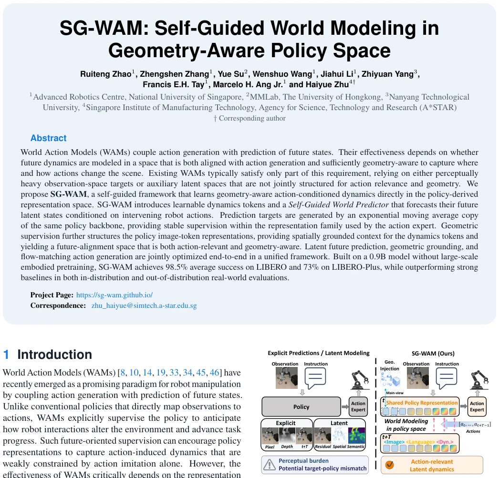
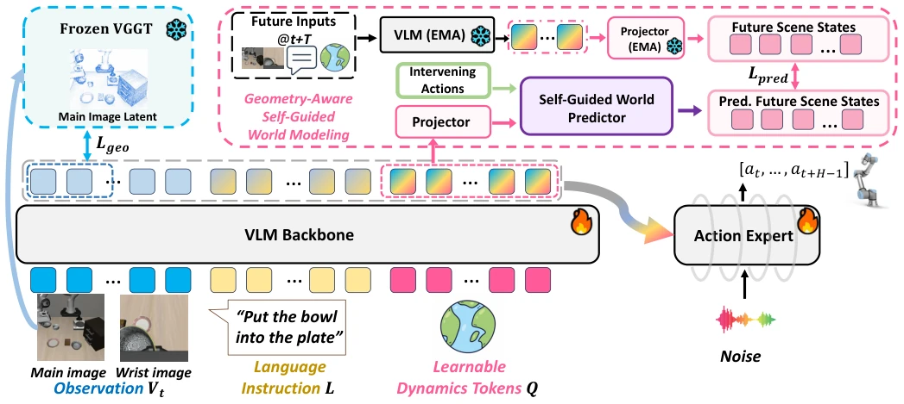
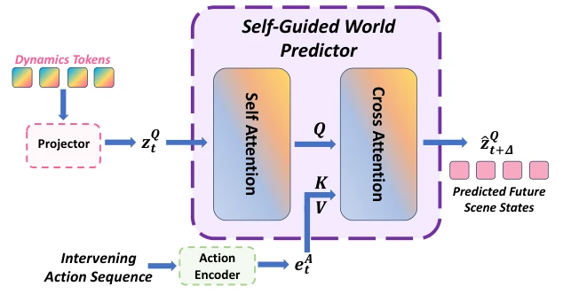
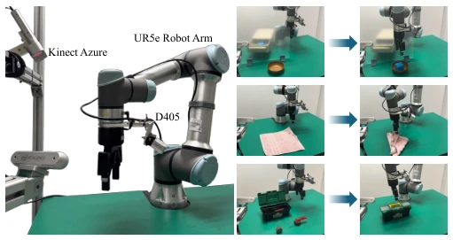
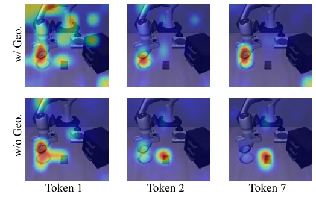
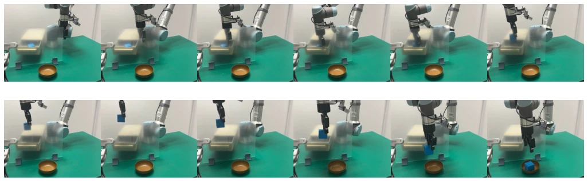
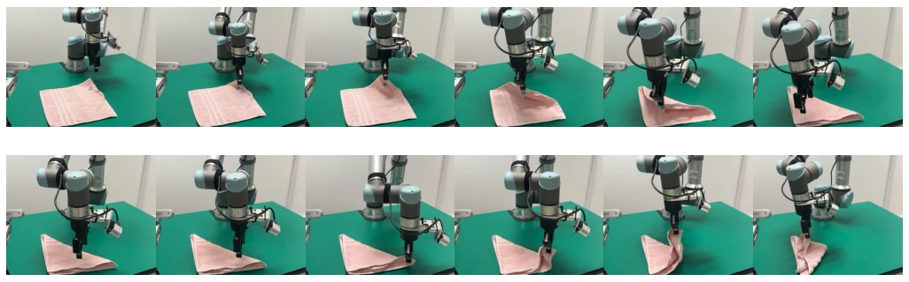
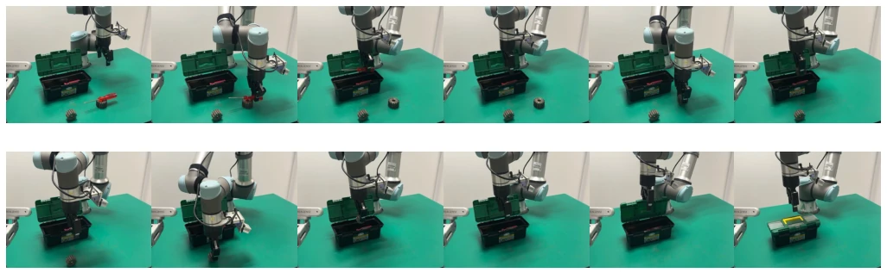

This SG-WAM brings a breath of fresh air to the WAM field. The 0.9B model achieves a 98.5% success rate on LIBERO, rivaling 7B baselines, carrying the spirit of a 'compact powerhouse'. It does not perform video generation like UniPi [15], nor does it rely on external features like VLA-JEPA [34], but instead directly 'plants' the world model within the policy space. However, although this Self-Guided mechanism is stable, is the update speed of the EMA copy fast enough to capture dynamic changes? Although geometric supervision improves attention focusing, does introducing VGGT [38] increase inference latency? After all, every millisecond counts during real-robot deployment. Overall, it proves that world modeling within the policy space is feasible, but whether 'geometric awareness' is truly necessary, or just a regularization term, still has room for discussion. This 'Self-Guided' strategy avoids external target drift, but is the computational cost worth it?
Existing WAMs face a dilemma: either predict the future in the observation space (e.g., WorldVLA [10]), where models are forced to learn perception details irrelevant to manipulation, such as texture and lighting, causing compute waste; or predict in latent space (e.g., VLA-JEPA [34]), but prediction targets often come from independent encoders, leading to potential mismatch between the prediction space and the representation space used by the action expert (Target-Policy Mismatch). This is like asking a navigator to look at a map, while the driver uses a different coordinate system. Furthermore, simply compressing latent space often loses fine-grained geometric information, while manipulation tasks rely heavily on spatial relationships. Therefore, how to construct a future alignment space that is strongly coupled with action generation while preserving geometric structure is key to improving policy generalization. SG-WAM aims to solve this representation misalignment and geometric loss problem, attempting to find a balance between efficiency and accuracy.

Figure 1: Conceptual comparison of existing WAMs and SG-WAM. Whereas explicit and auxiliary latent targets may introduce perceptual burden or target–policy mismatch, SG-WAM learns intervening-action- conditioned dynamics in geometry-structured, policy-derived represen- tations.
The SG-WAM framework is based on a VLM backbone, with the core comprising three parts. First is geometric-aware policy state: using a frozen VGGT [38] as a geometric teacher, aligning the geometric features of policy visual tokens via a projector, ensuring representations retain spatial structure. Second is the Self-Guided World Predictor (SGWP): introducing learnable dynamics tokens, SGWP predicts future token states based on current state and intervention actions, targets generated by an EMA copy of the same policy, ensuring prediction and action representations share the same source. EMA parameters are updated via exponential moving average, providing stable supervision. Finally, the Conditional Flow Matching Action Expert: generating actions based on the full context containing dynamics tokens. During training, geometric loss, prediction loss, and action loss are jointly optimized. During inference, the geometric teacher, SGWP, and EMA branch are removed, retaining only the online VLM and action expert, achieving efficient deployment. This design allows prediction to directly optimize policy representations.

Figure 2: Overview of the SG-WAM framework. The VLM jointly contextualizes multi-view observations, language, and learnable dynamics tokens for action generation. During training, a frozen VGGT teacher shapes main-view image tokens, while SGWP predicts future dynamics-token states conditioned on intervening actions and aligns them with an EMA policy target. All auxiliary branches are removed at inference.

Figure 5: Overview of the Self-Guided World Predictor (SGWP). The projected dynamics-token states are first contextualized through self-attention and then attend to the encoded intervening actions through cross-attention to predict future latent states.
Experiments cover LIBERO simulation, LIBERO-Plus out-of-distribution testing, and UR5e real robots. In simulation, SG-WAM achieves an average success rate of 98.5% on LIBERO with 0.9B parameters, surpassing 7B models such as WorldVLA [10]; reaching 73% in zero-shot transfer on LIBERO-Plus, significantly outperforming Spatial Forcing [24]. Real robot tasks include Pick and Place, Towel Folding, etc., maintaining advantages under background, lighting, and object variations. Compared to baselines like π0 [5], SG-WAM performs better under OOD. Ablation studies show that removing geometric supervision or world modeling both lead to performance degradation, especially in long-horizon tasks. Attention visualization indicates that geometric supervision makes tokens focus more on interaction areas. This indicates that self-guidance and geometric grounding jointly improve policy robustness, without requiring large-scale pre-training.

Figure 3: Left: Visualization of the real-world platform. We use a UR5e robot arm as the manipulation platform, the Kinect Azure camera as the main camera and the RealSense D405 as the gripper camera. Right: Visualization of 3 real-world tasks. 1) Top: Pick and Place. 2) Middle: Towel Folding. 3) Bottom: Toolbox Organization.

Figure 4: Representative middle-layer attention maps from dynamics tokens to main-view image tokens. The task is Pick up the black bowl between the plate and the ramekin and place it on the plate. With geometric supervision, the selected tokens attend more consistently to the robot–object interaction regions.
Figure 10: Visualization of the attention weight matrix of all latent dynamics tokens attending to main-view image tokens. w/ Geo. and w/o Geo. denote with geometric supervision and without geometric supervision, respectively.
其他图片Other Figures

Figure 6: Complete visualization of the Pick and Place task.

Figure 7: Complete visualization of the Towel Folding task.

Figure 8: Complete visualization of the Toolbox Organization task.